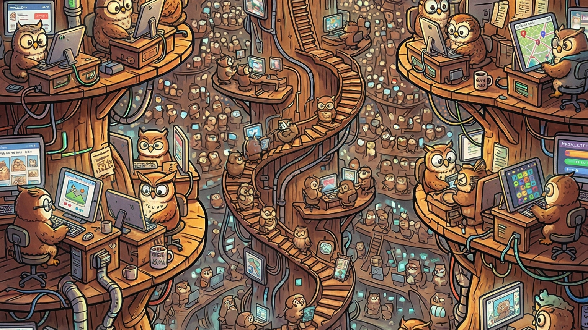
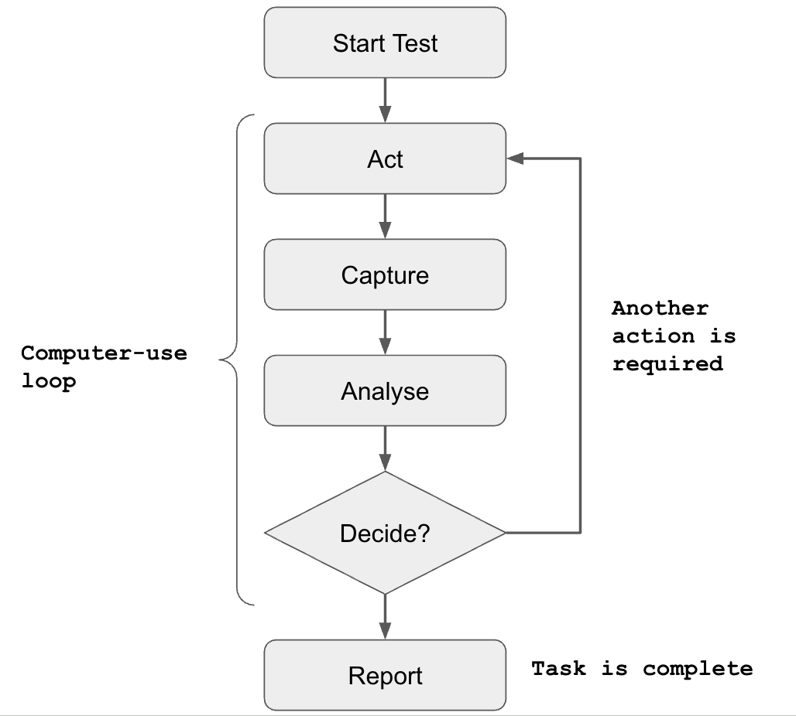
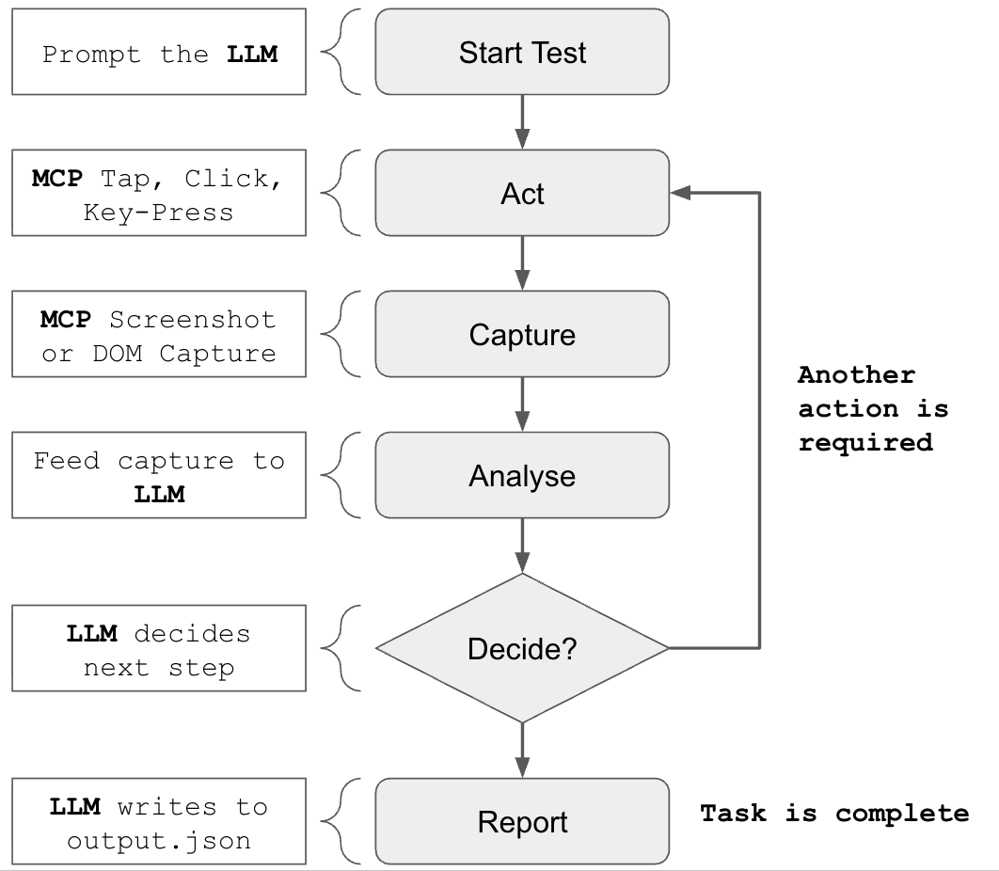
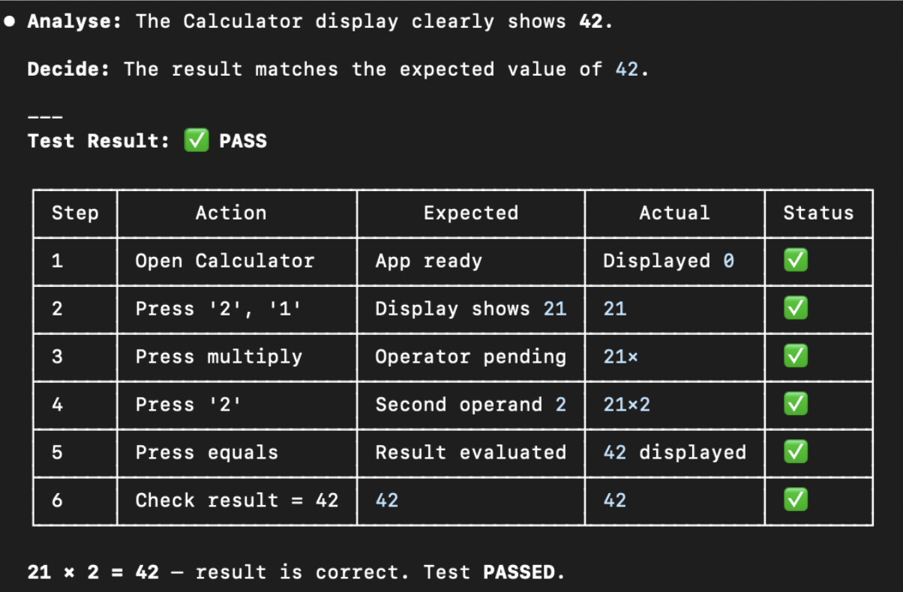
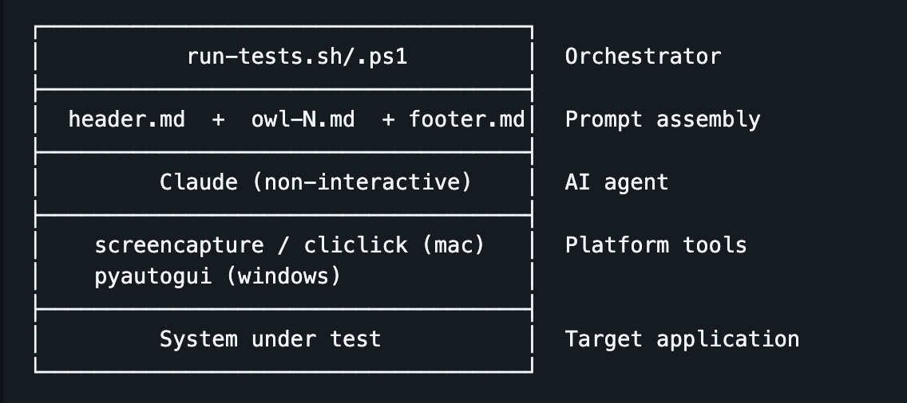

LLM-based software testing using a computer-use loop (the "owl loop")

There's an old adage: if you had enough monkeys on typewriters for long enough, one of them would almost certainly produce the works of William Shakespeare. But there's a problem. With infinite content to review, how would you ever know?
This is analogous to what a lot of software engineering teams are now grappling with. They've automated software programming, but that's just exposed weakness elsewhere in the SDLC: how do we verify that the software actually does what it's supposed to?
Verification has always been a weakness in our industry. We even coined a term for our greatest failing — "bugs" — and they're in every piece of software ever shipped. With AI massively increasing the rate at which code is produced, we now run the risk of drowning in them.
Historically, teams have tried to scale quality with non-scalable solutions: code reviews, manual testing, brittle UI automation, and unit tests that are tightly coupled to the current system implementation rather than validating intent. None of these scale linearly with code volume, let alone exponentially.
If the number of pull requests is increasing and the team size stays the same (or gets smaller), something is going to give. What does that look like? Slipping deadlines? Lowering code quality? Skyrocketing bug reports? Unusable apps?
Introducing the "computer-use loop"
I've been experimenting with several approaches to scaling software QA, and one of the most promising is the computer-use loop — a simple, generic process for software testing built on four repeatable steps: act, observe, analyse, decide. These steps form the basis of larger quality control processes that can be performed by LLMs or humans alike.

So how does this work in practice? Let's imagine you're given the following test script to execute:
Step 1 - Open Calculator
Step 2 - Press '2', then '1'
Step 3 - Press 'multiply'
Step 4 - Press '2'
Step 5 - Press 'equals'
Step 6 - Check result equals 42Each step can be broken down into four sub-steps. Step 1 becomes:
- Act: open the calculator app
- Observe: look at the screen
- Analyse: is the calculator app open?
- Decide: either retry opening the app, or proceed to the next step
In some ways this models how humans go about their daily lives: we do something, we get feedback, we process that information, and we make a decision — the outcome of millions of years of evolution.
One of the benefits of this process is that it's inherently dynamic. Consider what happens when we throw a spanner in the works:
Loop 1
- Act: open the calculator
- Observe: look at the screen
- Analyse: the calculator is open, but the display already shows
1764from a previous calculation - Decide: I can't run the next step from a dirty state — press
cto clear it first
Loop 2
- Act: press
c - Observe: look at the screen
- Analyse: the display now shows
0 - Decide: the calculator is in a known good state — proceed to step 2
This is the real value of the loop: the test is completely decoupled from the software implementation. There's no hard-coded selector, no fixed click coordinate, no assumption about initial state. The agent observes what's actually in front of it and adapts — in this case, recovering from a leftover calculation that was never part of the script. A traditional scripted test would have either crashed (no step for "press c") or silently produced the wrong answer. The loop, by contrast, can absorb unscripted changes while still validating the original intent: "21 multiplied by 2 should equal 42".
To implement this as an integrated LLM agent, we need three ingredients:
- An LLM that can analyse and reason about images, and make decisions
- A tool to capture images/screenshots
- A tool to simulate user actions

The computer-use loop in flight
So we have a model for how the computer-use loop might work — but does it actually work?
Here's an example prompt you can try yourself. On macOS:
You are an automated QA agent running on macOS. You have access to the following tools:
- cliclick - simulate mouse clicks, key presses, and input events (act)
- screencapture - capture the current screen state as an image (observe)
- calculator - system under test. If you need to clear the calculator, press 'c' when the app is in focus.
For each step in the test script, you must follow the computer-use sub-process:
- Act - perform the action using your available tools
- Observe - capture the screen with screencapture and examine the result
- Analyse - reason about what you see: did the action succeed, fail, or produce unexpected state?
- Decide - either proceed to the next step, retry the current step, or halt and report a failure with details
Do not proceed to the next step until the current step's Decide phase confirms success. If a step fails after 3 retries, halt and report.
Test script: Calculator
Step 1 — Open Calculator
Step 2 — Press '2', then '1'
Step 3 — Press 'multiply'
Step 4 — Press '2'
Step 5 — Press 'equals'
Step 6 — Check result equals 42Dependencies: cliclick and the built-in screencapture.
And the equivalent on Windows:
You are an automated QA agent running on Windows.
- pyautogui - you have a fully functional computer-use toolkit via pyautogui
- app specific - if you need to clear the calculator, press the 'c' key while it's in focus
For each step in the test script, you must follow the computer-use sub-process:
- Act — perform the action using your available tools
- Observe — capture the screen with screencapture and examine the result
- Analyse — reason about what you see: did the action succeed, fail, or produce unexpected state?
- Decide — either proceed to the next step, retry the current step, or halt and report a failure with details
Do not proceed to the next step until the current step's Decide phase confirms success. If a step fails after 3 retries, halt and report.
Test script: Calculator
Step 1 — Open Calculator
Step 2 — Press '2', then '1'
Step 3 — Press 'multiply'
Step 4 — Press '2'
Step 5 — Press 'equals'
Step 6 — Check result equals 42Dependencies: pyautogui.
Here is the example output on my MacBook:

What about MCP?
Instead of using platform-specific toolsets for screen capture and user input, there are a variety of computer-use MCP libraries. Below is a prompt that works against either domdomegg/computer-use-mcp (an open-source project) or Anthropic's recently released integrated alternative.
I've found Anthropic's solution to be particularly restrictive: as it currently stands, it won't work in a CI/CD sandbox or scripted environment because it requires manual human authorisation.
Use the 'computer-use' MCP to execute the following test script.
Test specific: if you need to clear the calculator, press 'c' when the app is in focus.
For each step in the test script, you must follow the computer-use sub-process:
- Act - perform the action using your available tools
- Observe - capture the screen with screencapture and examine the result
- Analyse - reason about what you see: did the action succeed, fail, or produce unexpected state?
- Decide - either proceed to the next step, retry the current step, or halt and report a failure with details
Do not proceed to the next step until the current step's Decide phase confirms success. If a step fails after 3 retries, halt and report.
Test script: Calculator
Step 1 — Open Calculator
Step 2 — Press '2', then '1'
Step 3 — Press 'multiply'
Step 4 — Press '2'
Step 5 — Press 'equals'
Step 6 — Check result equals 42Demonstration project: the owl loop
I've put together a demonstration project called the owl loop (github.com/jamesmiles/owl-loop), an attempt to implement structured, intent-based software testing using LLM-based computer-use. Each "owl" is a virtual test analyst that determines whether the software meets a specific design requirement or intent, and reports on a scale of 0–10.
The project is comprised of:
- A header — information about the system under test
- A footer — how analysis should be reported
- N owls — each a definition of intent
- A script to execute the tests with Claude Code

Current state of play
This is all experimental, but the dream is to integrate the owl loop inside a CI/CD pipeline. Here's where things stand today:
- The example tests each use ~50k tokens
- You don't necessarily need the most capable models to run tests — I've experimented with Haiku, Sonnet, and Opus, which is promising for containing execution costs
- Tests are currently much slower to execute than traditional scripted tests, due to remote model latency. It's roughly comparable to how long a human would take to execute the script
- There's no way to use Claude Code subscriptions inside CI/CD pipelines — a user is required to authenticate via a magic link, which means a Claude API key is required (significantly more expensive). Copilot CLI has similar authentication restrictions.
Local LLM testing
As a next step, I'm interested in seeing whether tests could be executed against a self-hosted LLM. This might significantly reduce latency, and may also be feasible because executing tests doesn't necessarily require the most capable model.
Why bother?
Latency and token costs aside, why is any of this worth pursuing? Because intent-based, LLM-driven testing changes the fundamental economics of QA in three important ways:
- Scalability. Traditional QA scales linearly with headcount: more features means more manual testers, more brittle UI scripts, more flaky CI runs. Owls don't get tired. If your test budget allows it, you can run a hundred owls in parallel and have them re-verify every flow on every commit.
- Decoupled from implementation. Conventional UI automation is tightly coupled to selectors, DOM structure, and pixel coordinates. Refactor a button and half your test suite turns red — not because the product broke, but because the tests did. An owl looks at the screen the way a user does. If the new button still says "Submit" and still submits the form, the test still passes.
- Intent-based, not script-based. Traditional tests verify steps; owls verify intent. Instead of asserting "click element
#btn-checkout, expect URL to contain/order/123", you describe the outcome: "a customer should be able to complete a purchase and receive an order confirmation". The owl figures out how. When the implementation evolves, the intent doesn't.
None of this replaces unit tests or property-based testing — those still have their place at the bottom of the testing pyramid. But for the messy, end-user-facing slice at the top, owls offer something the industry has needed for a long time: tests that scale with code volume rather than team size, and that survive refactoring because they were never coupled to the implementation in the first place.
Comments